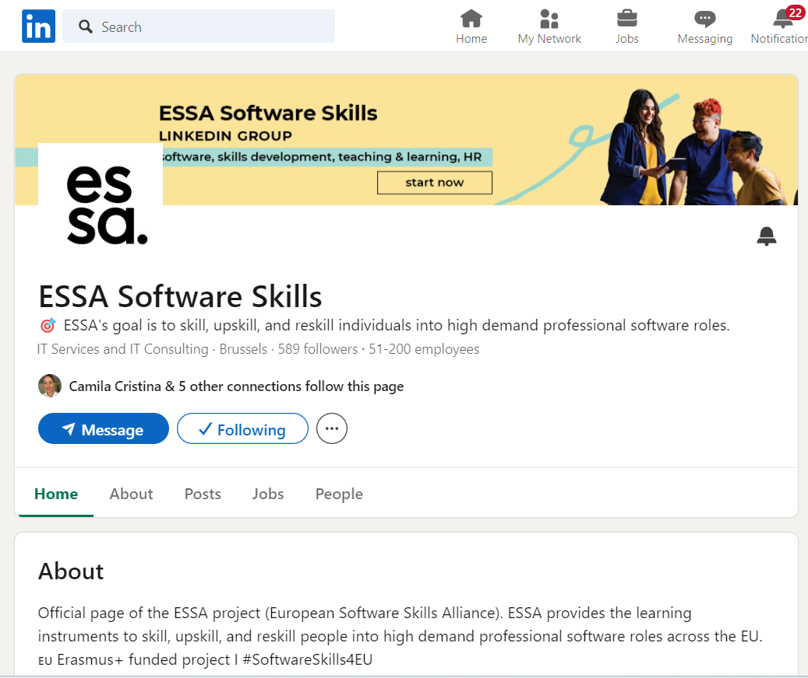
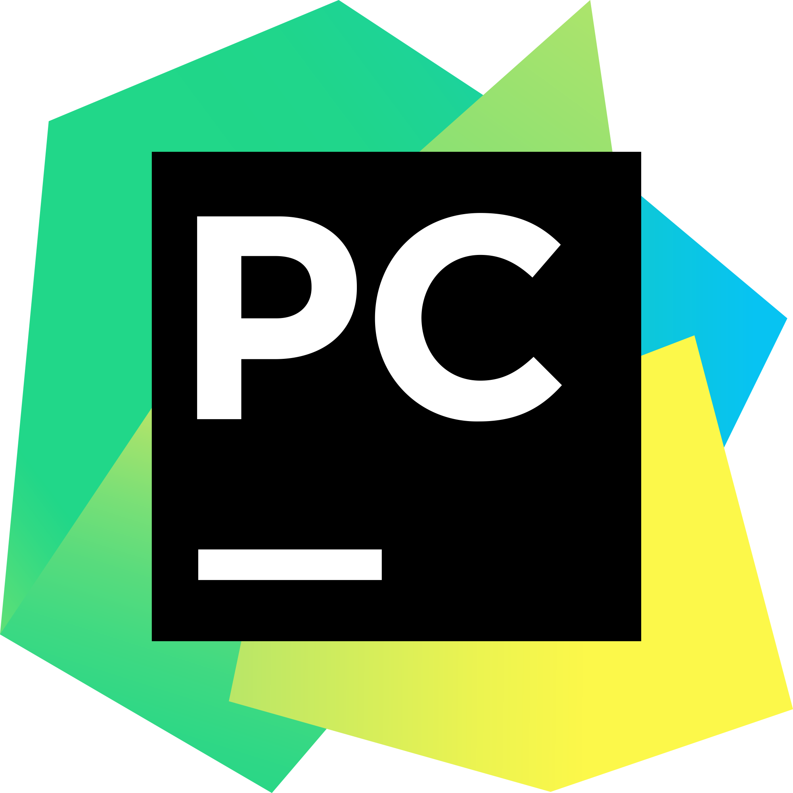

Home
Home
 Explore
Explore
 Notifications
Notifications
 Messages
Messages
 Profile
Profile
 More
More
38m
I have been learning so much on my course of Junior Software Developer.
Including creating this twitter clone page
You should check out their linkendIn page. ESSA is changing lives!
https://www.linkedin.com/company/essa-software-skills/

45m
Overall, Python's versatility and large ecosystem of libraries and frameworks make it a go-to language for a wide variety of tasks,
ranging from simple scripting to complex scientific computing and machine learning projects. I used IDE Shell to create my first Hello World and many more.
What is helpful is that python has a library documentation. Check out the documentation
https://docs.python.org/3/contents.html

18m
Thank you